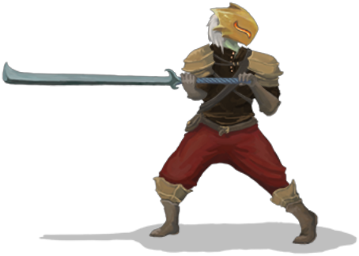
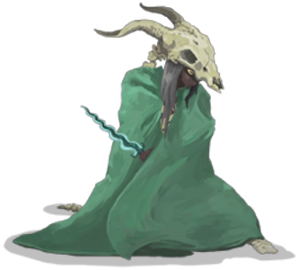
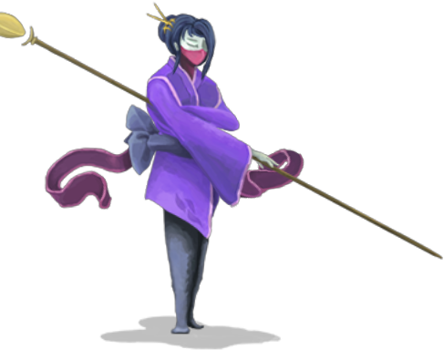

用机制讲故事
《杀戮尖塔》几乎没有传统意义上的剧情演出：没有过场动画，没有配音，没有角色之间的对话。全部叙事散落在几段事件文本和几十个字的遗物描述里。
但任何一位玩过几十小时的玩家，都能准确说出四个角色"是什么样的人"。战士的暴烈、猎手的冷静、机器人的程序感、观者的漠然神性——这些印象不是从文本里读到的，而是从出牌的代价里长出来的。
这套做法之所以成立，与游戏本身的载体有关：卡牌的文字描述都很短，敌人意图是纯图形信息，而牌组的每一次变化都由玩家亲手完成。玩家对角色性格的理解，来自自己反复做出的选择——是拿生命换伤害，还是拿信息换稳定，还是拿稳定换爆发。
角色的性格不写在台词里，写在机制的成本结构里。
一个角色的"性格"由三件事定义：他的资源从哪里来、他要为什么付出代价、他害怕什么样的局面。 四名角色在这三个问题上给出的答案各不相同，也就自然长出了四种人格。
四位角色一览
四名角色的差异从出生就开始了，最初写在初始生命与专属遗物上：
| 角色 | 专属遗物 | 关键机制 |
|---|---|---|
| 铁甲战士 | 燃烧之血 | 代价交换、卖血、力量叠层 |
| 静默猎手 | 蛇之戒指 | 毒素、弃牌、牌组循环 |
| 故障机器人 | 破损核心 | 充能球、程序排程 |
| 观者 | 至纯之水 | 姿态切换、能量循环 |
四名角色的生命上限并不一致，战士最高、猎手最低，这一差异直接决定了各自的容错空间，因此初始生命 80 点的战士被普遍认为是新手最舒服的起点。猎手的生命更低，容错相应更窄，换来的是更高的操作上限。机器人则处在另一个极端：它的强度不体现在血量或单卡上，而体现在"排程"完成之后的连锁反应——这也是它上手门槛最高的原因。
铁甲战士
用生命买入场券
悬停 / 点击查看初始生命 80 点，专属遗物燃烧之血让他在每场战斗结束后回复 6 点生命。
他的三套主流思路都围绕"交换"展开：卖血流用生命值换取当回合的伤害；烧牌流删掉低效卡，用更薄的牌组提高关键牌上手率；力量流则把回合数换成不断累积的力量层数。
这个"出卖灵魂换取恶魔力量"的士兵，每一次出牌都是一次报价。
静默猎手
用循环换取上限
悬停 / 点击查看初始生命 70 点，基础牌多为低费牌，专属遗物蛇之戒指让她在战斗开始时额外抽 2 张牌，直接加速牌组循环。
她的两套核心是"毒"与"弃牌"：毒素无视格挡、按回合结算，绕开了敌人的护甲；弃牌流则通过反复弃牌触发连锁效应，把手牌当成资源而不是消耗品。
她前期对群能力薄弱，需要玩家围绕核心组件提前规划整局路线，但成型之后上限极高。
故障机器人
按照程序运转
悬停 / 点击查看上手门槛最高的一位。专属遗物破损核心在战斗开始时生成一颗闪电充能球。
它的核心机制是充能球：闪电球提供伤害，冰霜球提供格挡，暗球则把能量积累起来等待一次性释放。所有输出与防御都来自"先布置、后结算"的顺序安排，与战士的激情和猎手的灵巧形成鲜明对照。
机器人前期防御薄弱、容易暴毙，也因此成为社区段子里"还在启动"的那一位。
观者
在两个极端之间
悬停 / 点击查看最后解锁的角色。专属遗物至纯之水在战斗开始时把一张 0 费的"奇迹"牌置入手牌，补上一段额外的能量循环。
她真正独特的地方是姿态系统：进入"愤怒"姿态后造成的伤害翻倍，但承受的伤害同样翻倍；进入"平静"姿态则能获得额外的能量。
这种"在极端之间切换"的机制，给了观者一种漠然而强大的神性气质，也让她在高进阶环境下被公认为最强的角色。
铁甲战士：代价交换
战士是全游戏最直白的一次"人格示范"。他的资源是生命值本身，而生命值在这款游戏里同时又是失败的判定条件——用一个与成败直接绑定的数值去买输出，这个决定天然带着悲壮感。
残暴、御血术、放血这类卡牌把"支付生命"写进了卡面；恶魔形态则把支付方式改成支付时间，用越拖越强的力量叠层换取前期空转。两种支付方式对应两种玩家：急性子会选择当场变现，慢性子会选择慢慢加码。
{kind=link}

这套设计的精妙之处在于，它把"生命值"从一条进度条变成了一个可交易的市场。老手会主动把自己压到低血量，因为在这个血量区间里，卖血牌的收益最高、风险却仍然可控。于是同一个角色，在新手手里是稳健的近战单位，在老手手里是一个不断自残的赌徒。
静默猎手：精密计算与毒素
如果战士代表"热情"，猎手代表的就是"计算"。她没有可以硬扛的血量，也没有单张就能翻盘的爆发牌，她的强度来自两个可以被精确计量的系统。
毒素绕开格挡，每回合稳定结算，因此对高护甲的敌人格外有效；它的问题是启动慢，需要时间把层数堆起来。弃牌则是另一种计算：手牌总量是有限的，通过主动弃掉不需要的牌来触发额外效果，相当于把"手牌"改造成一个可以循环利用的资源池。
两者结合，形成了一套典型的猎手式打法：前期用毒素和防御拖延，后期用极薄的牌组在一到两个回合内完成结算。她的上限因此非常高，代价是前期的每一场精英战都需要事先算清楚——她不是不能承受失误，而是承受不了第二次失误。
{kind=link}

故障机器人与观者：程序、姿态与分歧
后两位角色把"机制叙事"推得更远。
机器人的叙事是程序化的。充能球的生成、激发与位置都是确定的，它的强弱取决于玩家有没有把顺序排对：先铺冰霜球稳住防御，还是先堆闪电球抢输出，两种排程会导向完全不同的中后期节奏。它的失误往往不是"这一手打错了"，而是"三个回合之前就铺错了"。社区把这种缓慢的启动过程戏称为"还在启动"，这个梗本身就是对它机制特征的准确概括。
{kind=link}
机器人是四位角色中唯一以"科技残骸"形象出现的角色。它的全部力量都来自那颗在战斗开始时生成的充能球——先有布置，才有输出，这一条顺序规则贯穿了它的所有构筑方向。
观者的叙事则是神性式的漠然。姿态系统让她在"愤怒"与"平静"之间来回切换：愤怒带来双倍伤害，也带来双倍承受；平静不提供伤害，却提供继续运转的能量。玩家必须主动选择停留在哪一个极端，而任何一次犹豫都会立刻反映在血量上。
这种"必须做选择，且每个选择都有对称代价"的机制，恰好对应了她作为"观者"的设定——她不参与战斗，只负责观察与裁决。而在高进阶环境下，正是这套可以被精确操控的极端切换，让她成为许多玩家眼中最强的角色。
{kind=link}

四位角色的分歧最终落在一个问题上：你愿意为力量支付什么。战士支付生命，猎手支付时间，机器人支付排程的复杂度，观者支付风险本身。四套答案，四种人格，而它们全部由机制说出。
- 四个角色没有剧情台词，性格完全由机制的成本结构塑造。
- 战士初始生命 80，遗物"燃烧之血"战后回复 6 点，是容错最高的角色。
- 猎手初始生命 70，遗物"蛇之戒指"开局额外抽 2 张，靠毒素与弃牌循环取胜。
- 机器人遗物"破损核心"开局生成闪电充能球，先布置后结算，社区戏称"还在启动"。
- 观者遗物"至纯之水"提供额外能量循环；姿态系统伤害与承受双双翻倍，高进阶下公认最强。